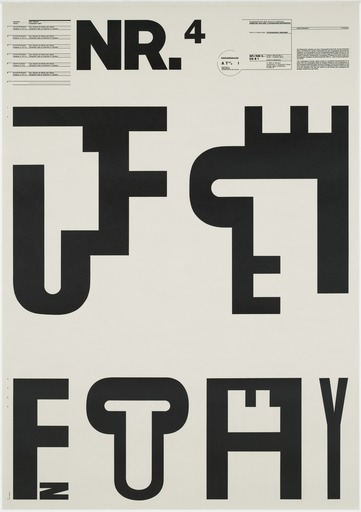
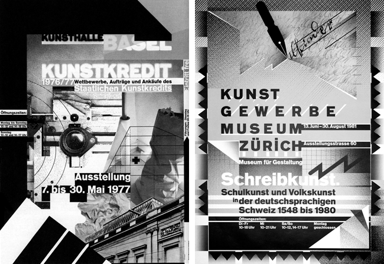
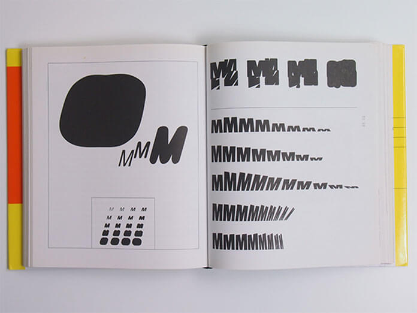

Introduction
Wolfgang Weingart is known by many as a graphic designer, the father of “New Wave” typography and a teacher. He is certainly known for his departure from traditional Swiss typography, never forcing any style on my students”. In this essay, I will go on a write about Weingart’s life to try and found out if he's what he is, what he is known as, and to show some of his great work.

Introduction: Wolfgang Weingart is known by many as a graphic designer, the father of “New Wave” typography and a teacher. He is certainly known for his departure from traditional Swiss typography, never forcing any style on my students”. In this essay, I will go on a write about Weingart’s life to try and found out if he's what he is, what he is known as, and to show some of his great work. Wolfgang Weingart is graphic designer best known for his experimental approach to working with typography. He is also known as ‘the father’ of the new wave typography, a movement also known as ‘swiss punk typography’. This essay will explore Weingart’s work, his teaching approach and how he became the father of New Wave Typography.
Background
Background: Weingart was born in 1941 in the Southern Germany, near the Swiss border., Weingart also He attended the Merz Akademie in Stungart for 2 years, from the year of 1958 to 1960. While there, his focus was on printmaking and the process of making linocuts, typesetting, and working with woodcuts. It was here that he also set metal type for the first time (Burton, 2013) This was very important as it set the foundation for Weingart’s later work working with typography. In 1964 Weingart went to study at the Schule fur Gestaltung, (Basel School of Design) in Basel, Switzerland. At that time Swiss approach to typography had international praise and Weingart was influenced by this. (Find a quote to support this) He began to teach typography at Basel but instead of continuing with the formal Swiss approach, Weingart began experimenting with typography. “I took Swiss typography as my starting point, but I blew it apart, never forcing any style on my students, I never intended to create a style.” ( Poynor, 1994, )
Typography
Weingart found Swiss Typography style known as ‘International Typographic Style’. Weingart alongside with Siegfried Odermatt and Rosemarie Tissi, were considered one some of the first to reject the international style. The ‘International Typographic Style’ know as the ‘Swiss Style’ may be a graphic design fashion created in Switzerland, Europe within the 1950s that values and centers on cleanliness, lucidness and objectivity. Typical highlights of the fashion are hilter kilter formats, utilize of a sans-serif typefaces and flush cleared out, worn out right content. Numerous of the early International Typographic Fashion works included ‘Typography’ as a essential plan component, which implies they centered more on typography since it’s the root of communication and after that pictures and other plan components comes as a auxiliary plan components and this can be the reason the title ‘International Typographic Style’ has the word ‘Typography’ with it. Wolfgang once claimed that his point of departure was the modernist typography of Switzerland and he had to blow it apart to construct his unique work (Meggs & Parvis, 2012, p.463) Wolfgang once claimed that his point of departure was the modernist typography of Switzerland and he had to blow it apart to construct his unique work (Meggs & Parvis, 2012, p.463)
The work of Wolfgang Weingart What I really like about Wolfgang In Weingart’s work is that he used block print letters, many different shapes like rectangles. In his typographic work, he worked mainly with black and white. imprinted it onto a poster.

Weingarts work
Weingart experimented with things like his print blocks there was some with different shapes and sizes. Some of the letters were big and some small or thinner to the others just fading away in the background. Then he had posters with completely random shapes and colours that just fit in perfectly on the poster making the main pieces stand out. The NR.4 & NR.5 posters, Figure 1 and Figure 2. These posters have taught me that you can have letters layed out in different way to impact the visual image of the poster and to make people think about the process of making and make the people inspired to create something of their own. These posters demonstrate Weingart’s unique style; breaking down of letterforms and rebuilding to make new typographic shapes. Weingart wasn’t concerned with legibility of type when working this way. Weingart is understood to have had a rebellious mind-set and has liked to push the bounds of what is taken into consideration as ‘the norm’ and from an early level he broke the typographic guidelines via liberating letters from their limiting design grids. He spaced them, underlined them or reshaped them and reorganized type-putting. Weingart believed that the development of the Swiss Typography changed into becoming stagnant as it was anonymous. Good – can you find a quote to support this?. His aim changed into to breathe new life into the teaching of new typography. He believed that the handiest manner to break typographic regulations changed into to realize them. Weingart’s ‘new wave’ work and thinking included letter spacing, rule lines punctuating space, diagonal type, mixing typefaces or weight changes within words, and type reversed from a varieties of bars. His work is very experimental and included experimenting with the printing processes to produce posters that appeared both complex but also playful and spontaneous resulting in unusual textures and building up images within his posters. Good These posters then became his most famous and admired works and in creating these posters, Weingart revived the techniques inspired by Dada collage and photo montage by layering images and type that had been photographed. One of his most famous posters and most experimental practices was in the making of his 1984 exhibition poster of the 'Matterhorn' , Figure 3 which he created by crumpling up tissue and photocopying it to get a range of shapes, tones and textures.
Weingart discusses some of the other elements identified for the New Wave programme. Immediately we'll see the use of surfaces and angles that are distinct from his beginning experiments. He switched from dark material on a single hue to angles that rendered colours and surfaces move smoothly, culminating in a more oddly visual vision as confined to colour level.
M Plan
The M plan, most teachers felt he was really disobedient, not honing the typography that he was instructed in Switzerland, issuing him the final proposal to concur or stopped. But he chosen to go back to work on a arrange he started a few of a long time prior. This was named the "M Plan," based on the "M" message. Weingart preferred her frame, her lines, her points and her plan.

The M plan, most teachers felt he was really disobedient, not honing the typography that he was instructed in Switzerland, issuing him the final proposal to concur or stopped. But he chosen to go back to work on a arrange he started a few of a long time prior. This was named the "M Plan," based on the "M" message. Weingart preferred her frame, her lines, her points and her plan.
Why weingarts work is so influential:
“I was motivated to provoke this stodgy profession and to stretch the typeshop’s capabilities to the breaking point,” Weingart stated in the retrospective Weingart: Typography—My Way to Typography, published by Lars Müller in 2000. He went on to describe the experimental mood of the era: “Accelerated by the social unrest of our generation, the force behind Swiss Typography and its philosophy of reduction was losing its international hold. My students were inspired, we were on to something different, and we knew it.”
Since the 1970s, he has had a Weingart made a decisive impact on the global development of typography. but it’s important to note that at the same time as Weingart’s work the 4 fundamental factors of global fashion, at the same time there is something’s extraordinary. The difference in the tone of his paintings is due to his particular system. He one way or the other remixes the factors and invigorates his layout method. Deconstruction/remixing. Extrapolation Juxtaposition pass-analyzation Weingart’s revolutionary manner of running with a conscious focus on iterative design procedure, has changed the manner the sector procedures layout. on this manner, his ‘remixing’ technique has essentially modified the world. Weingart encouraged his students to appearance and test with, not best the fundamental layout relationships with type placement, size and weight, but additionally with letter spacing, with the aim to test the limits of clarity. He allowed his college students to have the liberty to experiment and create in an expressionistic way permitting positive picture adjustments of kind for this reason intensifying meaning. due to this his students dubbed this fashion as ‘Weingart fashion’, although Weingart states that he in no way forced any style on his college students, also did not set out to create a fashion. Students from USA came to Basel to study under Weingart, this had a huge impact on graphic design in America as those students travelled back to USA and brought the experimental approaches learned from Weingart to their work there.
Refrences https://www.famousgraphicdesigners.org/wolfgang-weingart Books: The History of Graphic Design —Phillip B. Meggs Graphic Design History — Stephen Eskilson Wolfgang Weingart — My Way to Typography Online Article: http://www.eyemagazine.com/feature/article/reputations-wolfgang-weingart References: Burton, P. (2013) https://www.aiga.org/medalist-wolfgang-weingart Accessed 07/12/19 Top 6 Quotes by Wolfgang Weingart | A-Z Quotes, [online]. Available: http://www.azquotes.com/author/65433-Wolfgang_Weingart https://medium.com/@charchitgarg27/international-typographic-style-cd99a24721a https://www.aiga.org/medalist-wolfgang-weingart
Social Media | | Design by Erik Banas.